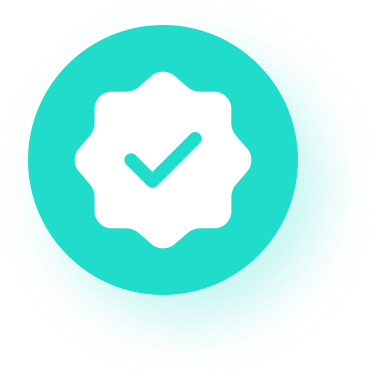

Для руководителя это подарок — снять с себя микроменеджмент юридического отдела.
Сопровождение бизнеса
Юрист-архитектор с 18-летним опытом построения комплексных систем правовой защиты бизнеса.
В судах я ориентируюсь лучше большинства коллег просто потому, что провела там тысячи часов.
За почти 19 лет я видела столько процессов, что понимаю механику конкретного судьи с первых минут заседания, знаю психологию чиновников и работников государственных, муниципальных учреждений не из учебников, а из личного общения у них в кабинетах. Мне не нужно время на раскачку или изучение матчасти процесса — я сразу вижу, куда бить в этом процессе и как поведет себя оппонент.
Я читаю договоры поставки опасных грузов (нефтепроводы) и строительные контракты так глубоко, что вижу финансовые дыры сквозь юридические формулировки. Там, где другой увидит просто пункт о сроках или пени, я увижу риск простоя товара или обрушения конструкции.
В операционной деятельности обладаю подтвержденным опытом ведения сложных коммерческих споров по всей России (взыскание задолженности, банкротство, договоры поставки), а также сопровождения сделок высокой сложности (нефтепродукты/ДОПОГ, строительство, поставка под залог).
Мой удаленный формат работы — это отлаженная машина. Я выстраиваю процессы так, чтобы они работали автономно. Мне не нужен контроль над плечом, мне нужны полномочия для принятия решений.
Моя главная особенность — понимание логики государства. Почти 20 лет я варюсь в этой системе: от рядовых запросов до защиты интересов компаний. Там, где штатный или не такой опытный юрист получит стандартную отписку, посетует на невозможность или соврет, я знаю, к кому еще зайти, написать и какой еще документ подать сегодня, чтобы дело сдвинулось.
Мой подход выходит за рамки стандартной юридической поддержки. За последние годы я выстроила эффективную систему взаимодействия с государственными органами (GR) для решения общественно значимых вопросов. Этот опыт позволил мне глубоко понять логику принятия решений госорганами, что помогает находить нестандартные решения и быть уверенной в результативности и фундаментальности своей деятельности.
Я анализирую бизнес-механизмы на наличие противоречий с законодательством и могу оценивать целесообразность диалога с государством для лоббирования интересов отрасли. Это позволяет мне видеть правовое поле на несколько шагов вперед и предотвращает кризисы еще до их возникновения.
Мой опыт

СИСТЕМНОЕ ПОСТРОЕНИЕ И УПРАВЛЕНИЕ ПРОЦЕССАМИ (LEGAL OPS)
Это то, чем я горжусь: создание автономных механизмов.- Организация юридической функции «с нуля» и управление командой юристов (до 5 человек).
- Перевод юридических департаментов на удаленный формат с сохранением контроля над сроками и обязательствами.
- Разработка регламентов согласования договоров, внедрение электронного документооборота (ЭДО) для оптимизации бизнеса.
- Постановка KPI юристам, делегирование задач и контроль исполнения без микроменеджмента.
СУДЕБНАЯ ЗАЩИТА И ВЗЫСКАНИЕ АКТИВОВ
Мой уникальный опыт дает преимущество при построении обороны.
- Полный цикл взыскания дебиторской задолженности через суд, службу судебных приставов (ФССП) и банкротство.
- Представительство интересов в судах всех инстанций (СОЮ, Арбитраж) по разным категориям дел (ЖКХ, стройка, поставка, перевозка, банкротство, административные производства, перевозки, порядок пользования имуществом).
- Работа высокой плотности: участие в конвейере заседаний (до 20 в неделю), ведение десятков дел одновременно.
- Контроль деятельности арбитражных управляющих, анализ отчетов, поиск оснований для оспаривания сделок должника.
ДОГОВОРНАЯ РАБОТА И СТРУКТУРИРОВАНИЕ СДЕЛОК
Здесь моя любовь к инструкциям, порядкам и правилам находит выход.
- Глубокая правовая экспертиза контрактов (подряд, поставка сложного оборудования, опасные грузы/ДОПОГ, строительство, аренда коммерческой недвижимости, в том числе у ДГИ).
- Структурирование сделок, купля-продажа, цессия, отступное.
- Выстраивание безопасных процессов передачи данных внутри компании; аудит IT-подрядчиков (разработчики 1С).
- Суперпрофессиональная проверка контрагентов (Due Diligence) перед заключением сделок.
АНТИКРИЗИСНЫЙ ФОРЕНСИК И КОМПЛАЕНС
Работа помощника АУ и расследование схем недопоставок показали мой талант детектива.
- Forensic-анализ бухгалтерской документации должника (за 3 года) для выявления признаков вывода активов.
- Расследование мошеннических схем поставщиков на маркетплейсах (Ozon); выявление уязвимостей площадок.
- Разработка комплекта документов по защите персональных данных (152-ФЗ) и коммерческой тайне («с нуля»).
- Мониторинг законодательства и адаптация внутренних политик под новые регуляторные требования.
ТЕХНИЧЕСКАЯ ОСВЕДОМЛЕННОСТЬ
Инструменты, которые подтверждают эффективность десятилетиями.
- Судебные базы: КАД Арбитр, ГАС Правосудие, Casebook.
- Справочно-правовые системы: КонсультантПлюс, Гарант.
- Офисное ПО: MS Office, Excel, PDF, FineRider, CamScan, 1С.
GR И ОБЩЕСТВЕННАЯ ЭКСПЕРТИЗА
То, что приносит моральное удовлетворение и закрывает потребность в безопасности общества.
- Лоббирование общественно значимых интересов во взаимодействии с государственными органами (Правительство, Прокуратура, МВД, Управы районов, специфические ведомства).
- Правовое выявление и сопровождение общественных инициатив (демонтаж незаконного видеонаблюдения, благоустройство территорий).
- Мотивация образовательных учреждений к проведению дополнительных уроков правовой тематики.
Почему я нужна?
Для руководителя это подарок — снять с себя микроменеджмент юридического отдела.
Ценообразование
Зарплата 60 000 рублей: 85 500 рублей в 2020 году и 112 500 рублей в 2025–2026 годах.
Зарплата 15 000 рублей: 21 375 рублей в 2020 году и 28 125 рублей в 2025–2026 годах.
Базовая зарплата в 130 000 рублей на руки выросла до 185 250 рублей к 2020 году и до 243 750 рублей в 2025–2026 годах.
Ключевые навыки
Договорная работа: разработка и экспертиза сложных договоров (поставка, подряд, аренда, услуги).
Судебная практика: представительство в судах (СОЮ, АС), ведение исполнительных производств.
Банкротство: взыскание задолженности, сопровождение процедур, оспаривание сделок.
Legal Tech: внедрение ЭДО, работа с IT-отделом, цифровая безопасность.
Management: управление командой юристов, постановка KPI, делегирование.
Self-managment: автономность, высокая самоорганизация, удаленная работа.